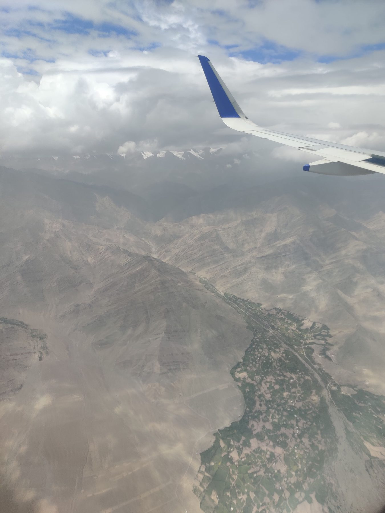
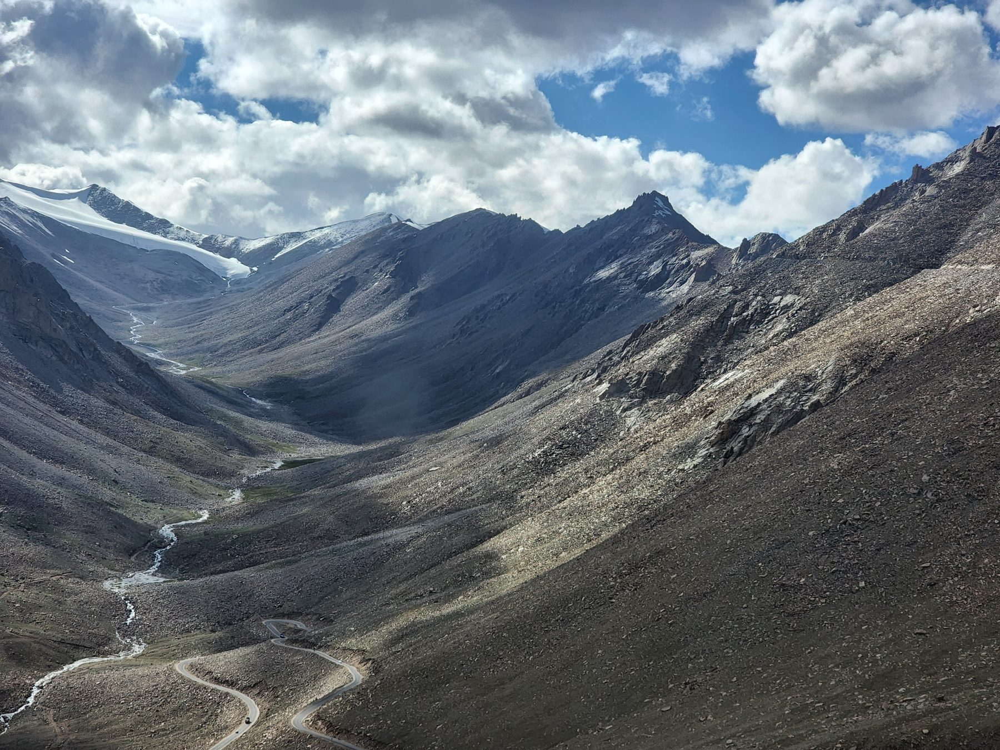
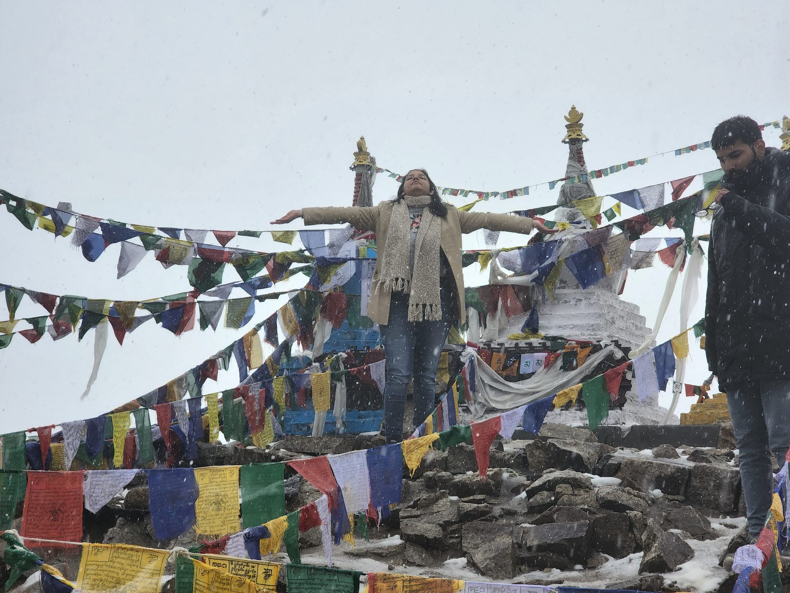
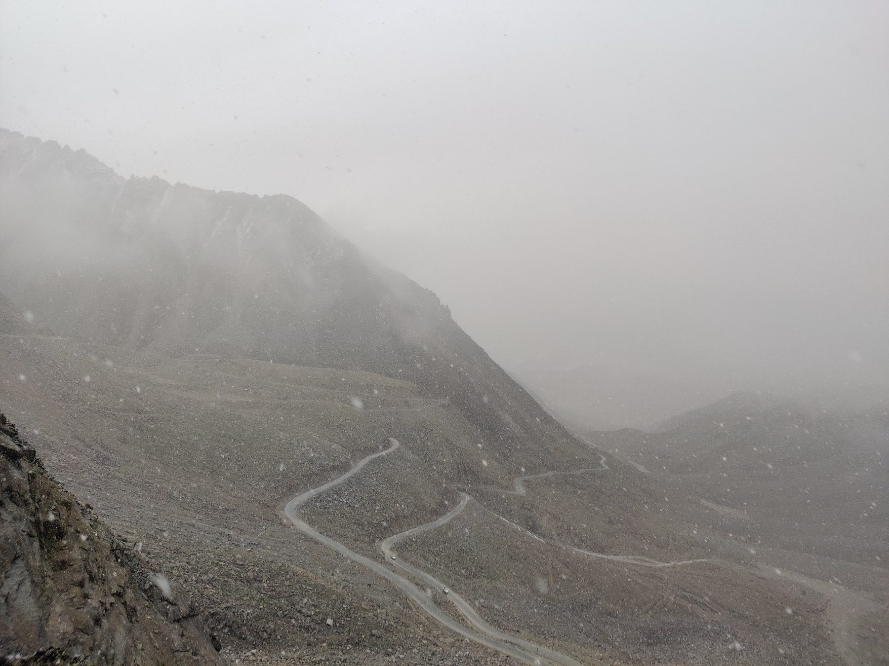
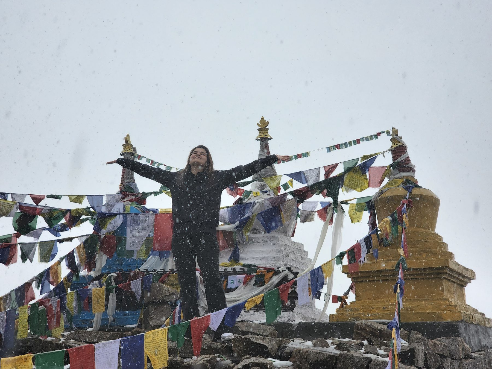
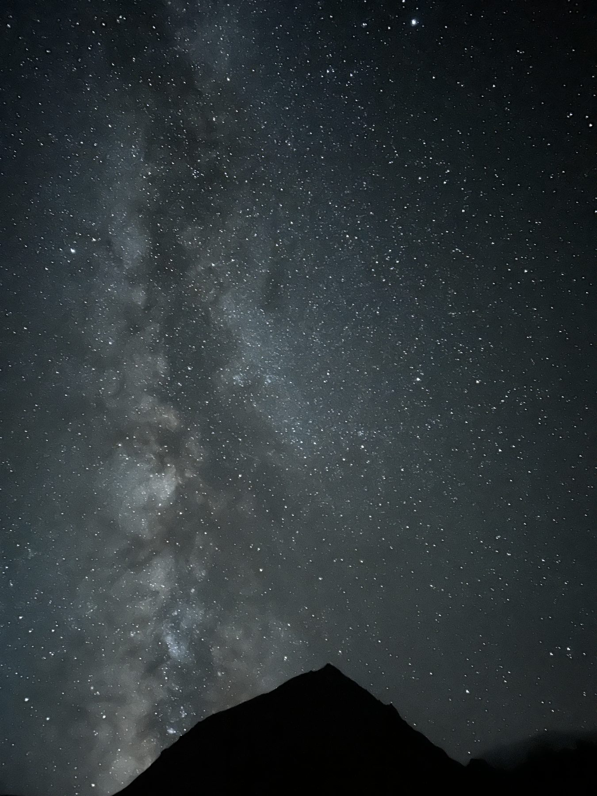
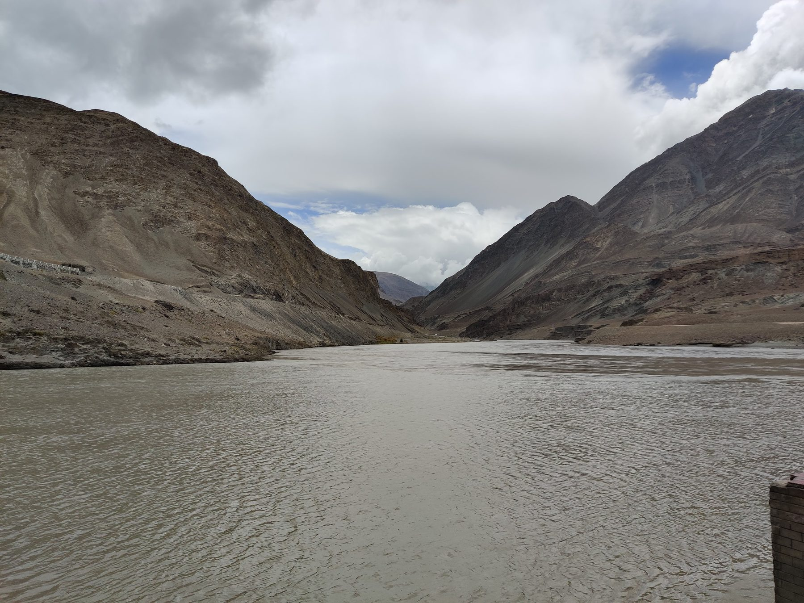

We came back
smaller.
a week in ladakh · july 20221
A sky full of stars had been a concept, a song even.
Here, they were real.
Everything else — the cold, the road, the air or lack thereof — was the price of admission.

"Of immovable things, I am the Himalayas."
The Gita says it simply. Below the plane window,2 for the first time, you believe it.
For most of the group, this was a first time. I'd been before. I remembered a little of what was coming. Not enough.
The land above eleven thousand feet
is a different country.
Grass stops trying. Trees surrender.

What's left is colour — umber, ash, bone, rust — and the wind that moves between them.
You notice your breath first.3 Then your heart. Then a headache behind the eyes that nobody warned you about.4
We were climbing toward Khardung La5 — one of the highest motorable passes in the world — when the clouds lowered onto the road. Someone asked if it was rain.
I said no.

They stepped out. Some of them wept.


Nobody spoke.
At 18,000 feet, a handful of steps earns you breathlessness. The cold doesn't knock8 — it enters, takes the warmth from your hands first, then your face. And still they stood in it, arms wide, faces up. One of them was mouthing something I couldn't hear. I think she was thanking it.
I woke them
at two.
Nubra is what the sky does when nothing is in the way.6
It took maybe a minute for our eyes to adjust. Then it appeared.

I didn't yet know how to photograph stars. The sky I've shown you is from a different valley, a different night. But it is the sky we saw.
Not all rivers shout.

The Zanskar here is slow, brown, enormous.7 It does not roar. It exhales. You can watch it for a long time and understand why people once decided the oldest gods lived in water.
Then one of us — quietly, almost to herself — started to sing.
Chamba kitni door…
Her voice was not a performance. She wasn't singing for us; she was singing at the river, the way you might speak to someone you hadn't seen in a long time.
The mountains listened. The dog listened. We listened.
That was the second silence of the trip. The first had been under the stars.
We came back
smaller.
Ladakh · July 2022